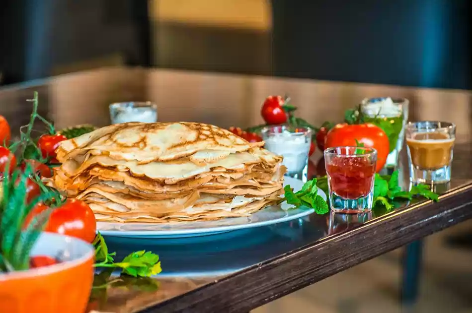

Enkelt recept på pannkakor
Gör traditionella tunna pannkakor med detta enkla och goda pannkaksrecept.
- Portioner
- 4
- Tillagningstid
- ca 45 min
- Svårighetsgrad
- Lätt
Ingredienser
Så här gör du
- Blanda mjöl och salt i en bunke.
- Vispa i hälften av mjölken och vispa till en slät smet.
- Vispa i resten av mjölken och äggen.
- Låt smeten vila i ca 10 minuter.
- Stek tunna pannkakor i lite smör, för varje pannkaka.
- Servera med sylt, bär eller frukt.
Serveringsförslag
